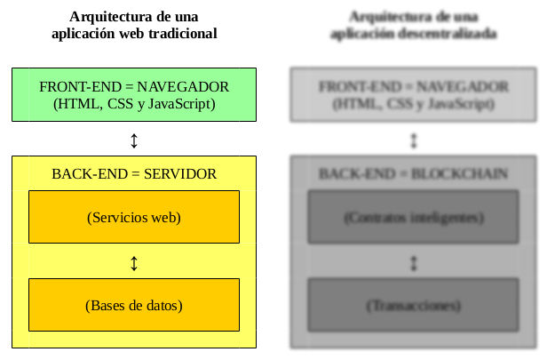
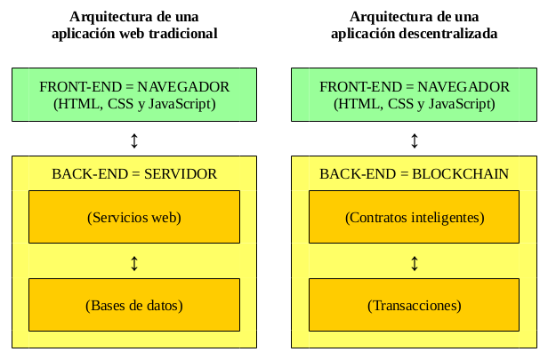
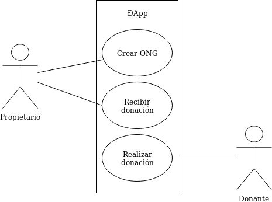
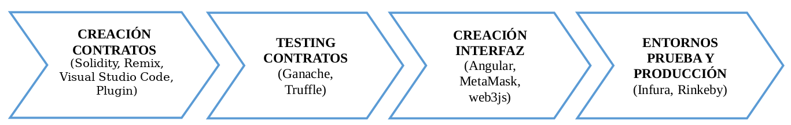

Asesor. Desarrollador. Profesor. Formador.



// Estructura
struct Organization {
uint id;
address owner;
string name;
}
// Array
Organization[] public organizations;
// Mapping
mapping(address => uint) public ownerToOrganizationId;// Constructor
constructor() public {
// to fix problem with nulls
organizations.push(Organization(0, 0, "0"));
}
// Eventos
event OrganizationCreated(
uint indexed id, address indexed owner, string name);
// Modificadores personalizados
modifier ownerNotExists() {
require(ownerToOrganizationId[msg.sender] == 0,
"suplied owner already have an organization");
_;
}function addOrganization(string _name) external
ownerNotExists() {
...
emit OrganizationCreated(organizationId, msg.sender, _name);
}
function donation(uint _organizationId) external payable
ownerExists(_organizationId) {
...
emit DonationSubmitted(_organizationId, owner, msg.sender, msg.value);
}
function getOrganizationsLength() external view returns(uint) {
return organizations.length;
}# instalar
npm install -g ganache-cli# ejecutar
ganache-cli --gasLimit 7000001 --mnemonic "$(cat wallet.mnemonic)"# instalar
npm install -g truffle# compilar
truffle compile# migrar
truffle migratevar NonGovernmentalOrganizations = artifacts
.require("NonGovernmentalOrganizations");
contract("NonGovernmentalOrganizations", async (accounts) => {
it("addOrganization - ok", async () => {
let instance = await NonGovernmentalOrganizations.deployed();
let tx = await instance.addOrganization(expectedName,
{ from: expectedOwner });
assert.equal(tx.logs[0].event, "OrganizationCreated");
let result = await instance.organizations.call(expectedId);
assert.equal(result[2], expectedName);
let ownerId = await instance.ownerToOrganizationId(expectedOwner);
assert.equal(ownerId, expectedId);
let length = await instance.getOrganizationsLength();
assert.equal(length, expectedLength);
});
});# testear
truffle test# instalar
npm install -g @angular/cligetUserAddress() {
if (!this.web3) {
this.messagesService.sendErrorMessage('Try MetaMask.');
}
this.web3.eth.getAccounts().then(accounts => {
if (!accounts || accounts.length === 0) {
this.messagesService.sendErrorMessage('No user accounts.');
}
if (StorageUtil.getUserAddress() !== accounts[0]) {
StorageUtil.setUserAddress(accounts[0]);
this.messagesService.sendNewUserAddressMessage(accounts[0]);
}
}).catch(error => {
this.messagesService.sendErrorMessage(error);
});
}async getContractInstance(): Promise<any> {
if (!this.web3) {
throw new Error('web3 server not found. Try MetaMask.');
}
const ngoContract = contract(artifacts);
ngoContract.setProvider(this.web3.currentProvider);
try {
const ngoInstance = await ngoContract.deployed();
return ngoInstance;
} catch (error) {
console.log(error);
throw new Error('Contract has not been deployed to network.');
}
}async add(organization: Organization): Promise<Organization> {
const contractInstance = await this.web3Service.getContractInstance();
const oldOrganization = await this.getCurrentUserOrganizationAsOwner();
if (oldOrganization) {
throw new Error('The user is already owner of an organization.');
}
const transaction = await contractInstance.addOrganization(
organization.name, { from: this.senderAddress });
const newOrganization = this._getOrganizationFromTransaction(transaction);
this.organizations.push(newOrganization);
console.log('OrganizationService->add', newOrganization);
return newOrganization;
}async donation(id: number, ethValue: number): Promise<Donation> {
const organization = await this.getOne(id);
const contractInstance = await this.web3Service.getContractInstance();
const weiValue = this.web3Service.etherToWei(ethValue.toString());
const transaction = await contractInstance.donation(organization.id,
{ value: weiValue, from: this.senderAddress });
const donation = await this._getDonationFromTransaction(transaction);
console.log('OrganizationService->donation', donation);
return donation;
}# ejecutar
ng servePrimero hacemos el build y luego desplegamos en un servidor web. Puede ser en GitHub Pages, u otro, pero siendo puristas habría que usar IPFS.
Con Angular ejecutar:
# empaquetar
ng build --prodvar HDWalletProvider = require("truffle-hdwallet-provider");
module.exports = {
networks: {
rinkeby: {
provider: function () {
let provider = new HDWalletProvider(
walletMmnemonic,
"https://rinkeby.infura.io/v3/" + apiKey);
return provider;
},
gas: 7000001,
network_id: 4
}
}
};truffle migrate --network rinkebyLos videotutoriales de Nicolas Palacios sobre Solidity
El tutorial interactivo de CryptoZombies
El tutorial “Ethereum Overview”
El tutorial "Ethereum Pet Shop"
Creación de Smart Contracts
Testing de Smart Contracts
Creación de Interfaz de Usuario

Subida a entornos de prueba y producción
Las slides están hechas con MarkdownSlides.